Siamo partiti da un pretesto: un concorso cui le prof di filosofia e italiano ci hanno proposto di partecipare.
“Perchè no?”, ci siamo detti. “Tanto la Shoah è parte del programma d'esame, il curricolo di educazione civica dobbiamo farlo, un argomento vale un altro”
Abbiamo formato dei gruppi di lavoro, i criteri di scelta sempre i soliti: Marco mi sta simpatico; Paolo sa scrivere; Giacomo ci sa fare con il computer eccetera, eccetera.
L'idea iniziale, dunque, era: “facciamo contente le prof e ci togliamo un pensiero, con tutto quanto ci sarà da studiare quest'anno, almeno questo lo accantoniamo!”.
Invece...leggendo, visionando documenti, seguendo tracce di storie apparentemente così lontane, confrontandoci giorno dopo giorno, abbiamo cominciato ad appassionarci all'argomento e abbiamo capito che parlare di Shoah non è mai abbastanza, perchè non è qualcosa che non ci appartiene, distante nel tempo.
Riflettere sulla Shoah significa riflettere sui nostri dubbi, sulle nostre angosce, sulle nostre paure, su ciò che vogliamo essere.
Ci siamo ritrovati catapultati in un passato che si fa, spaventosamente, presente, perchè la
discriminazione, il sopruso, la violenza, concentrati in maniera mostruosa nella Shoah, sono riconoscibili ancora oggi in atteggiamenti che sono all'ordine del giorno.
È da questa constatazione che è nata allora l'idea di mettere insieme i nostri percorsi di ricerca e confronto, come pagine dello stesso libro.
La discriminazione violenta, alla base della Shoah, si è declinata nelle varie forme che viviamo tutti i giorni.
Abbiamo scelto quelle più evidenti, seguendo anche ciò che a noi sta più a cuore.
Magari, partendo da questo sito -ci piacerebbe- altri ragazzi potranno proseguire il discorso...perchè parlare di Shoah vuol dire parlare di noi.
Chi Siamo?
Siamo studenti della Classe 5A del Liceo Scientifico delle Scienze Applicate, nell'istituto "Via Copernico" di Pomezia
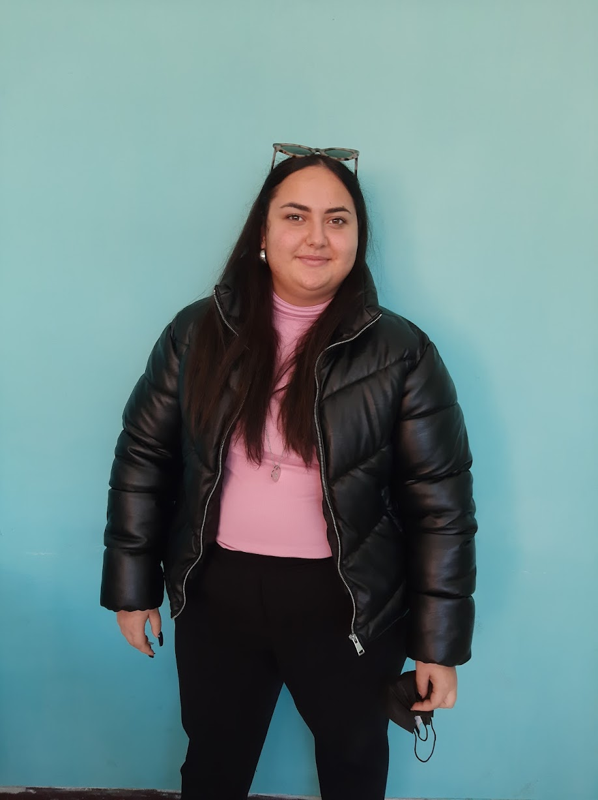
Alessandra Aggio - Omocausto
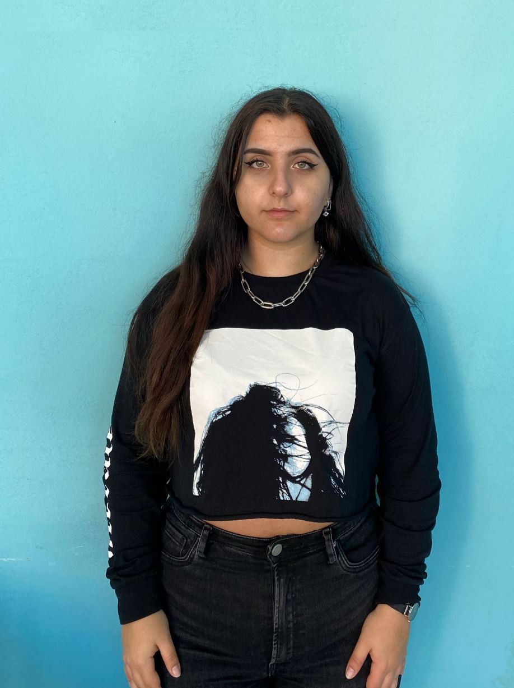
Alice Di Maio - Omocausto
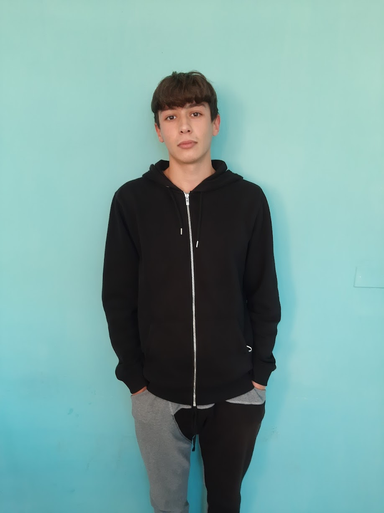
Alessandro Faticanti - Omocausto
Lorenzo Moriani - Omocausto
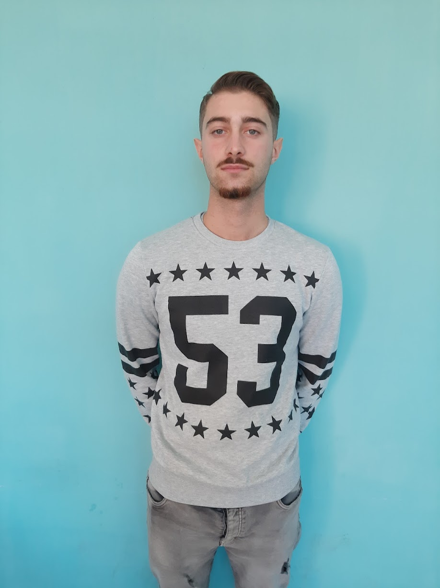
Alberto Belviso - Razzismo nello sport
Luigi Molinari - Razzismo nello sport
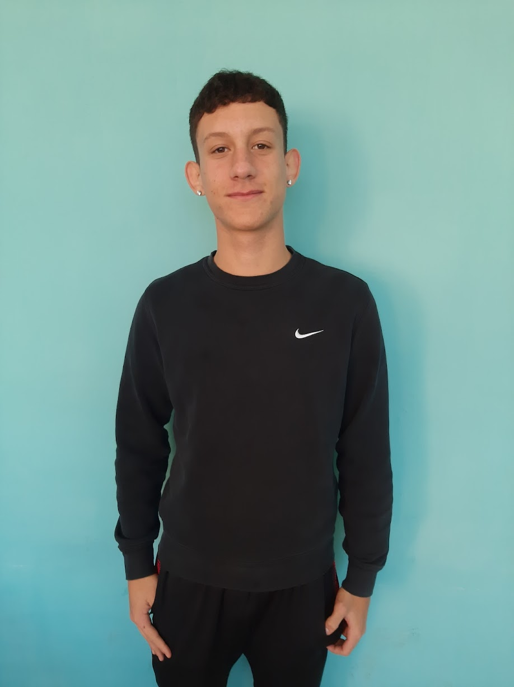
Alessandro Intelligenza - Razzismo nello sport
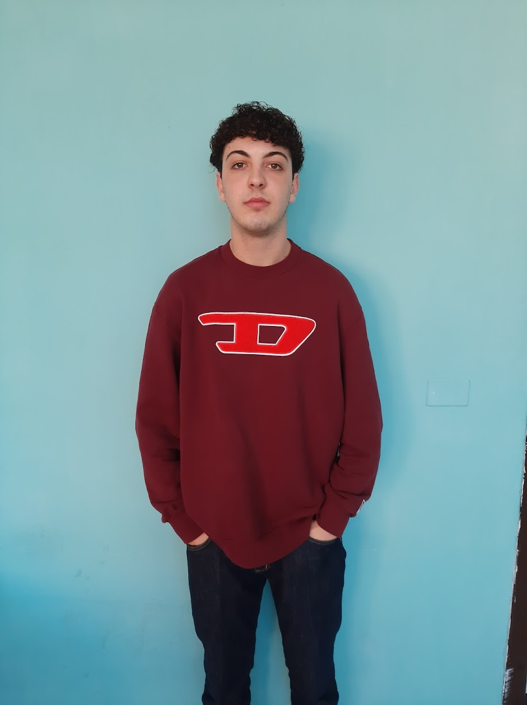
Marco Anfora - "Luce del Futuro" e sfondo Passato e Presente
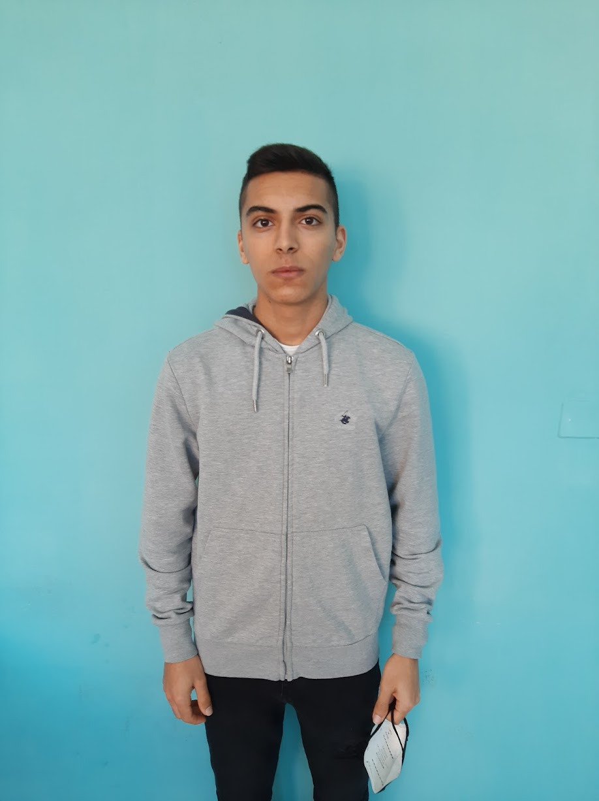
Davide Mandolesi - "Luce del Futuro" e sfondo Passato e Presente
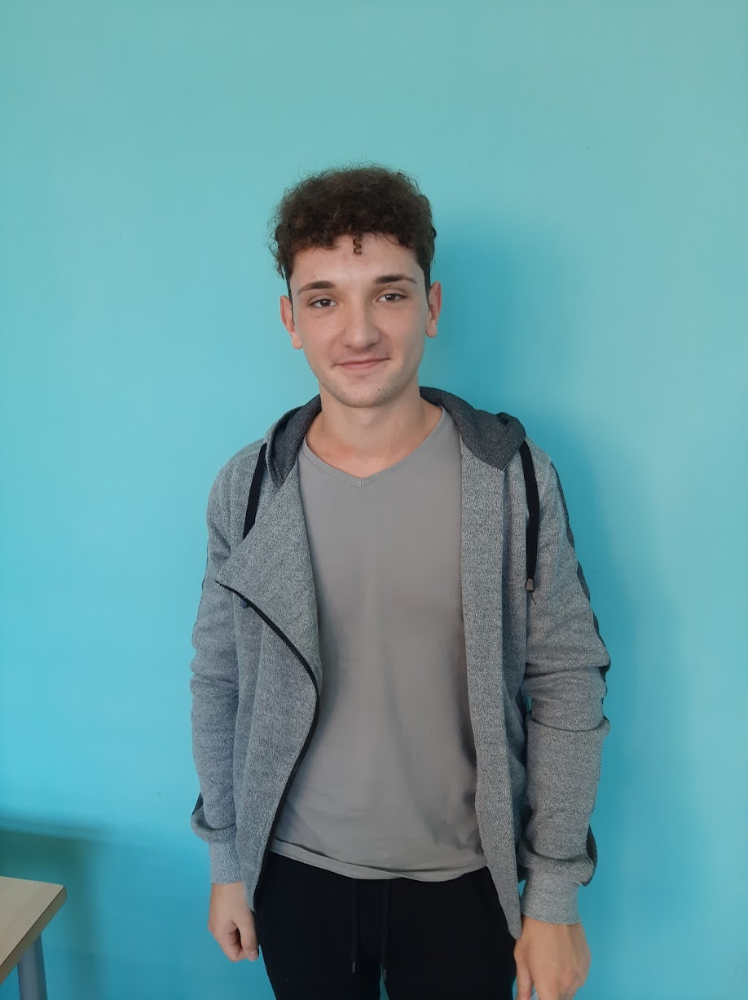
Alex Craciun - Libertà di stampa in Cina
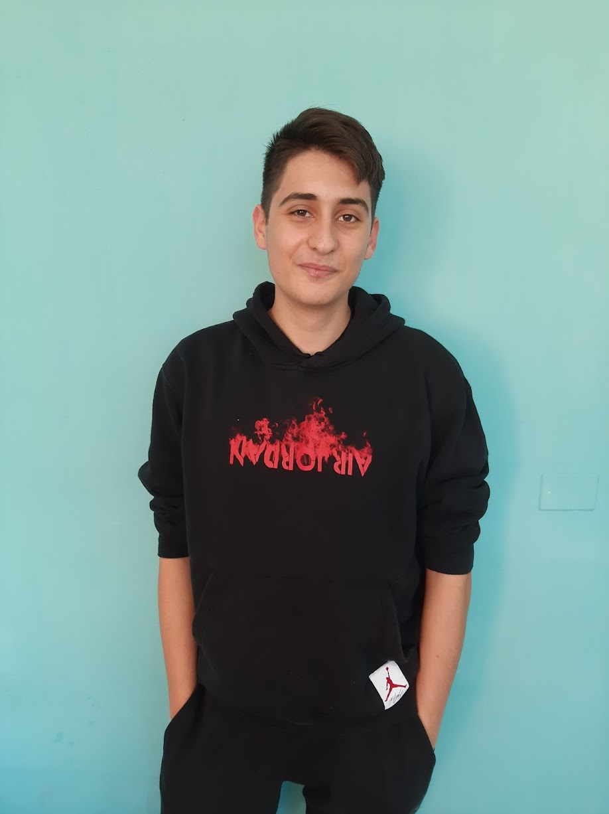
Giovanni Albarelli - Libertà di stampa in Etiopia
Luca D'Egidio - Libertà di Stampa
Davide Sodi - Libertà di Stampa
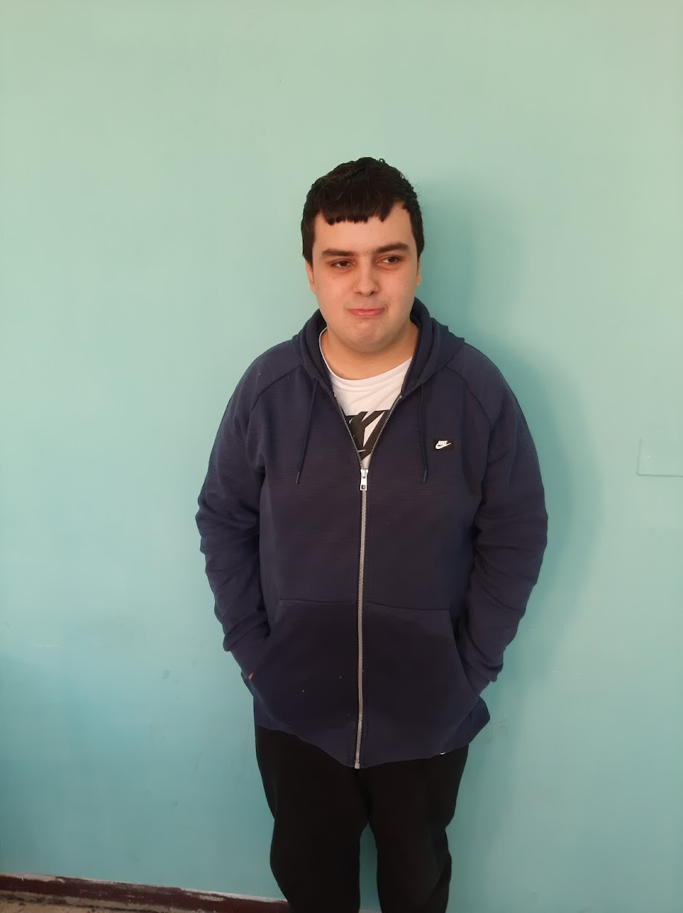
Daniele Pignalosa - Fotoreporter
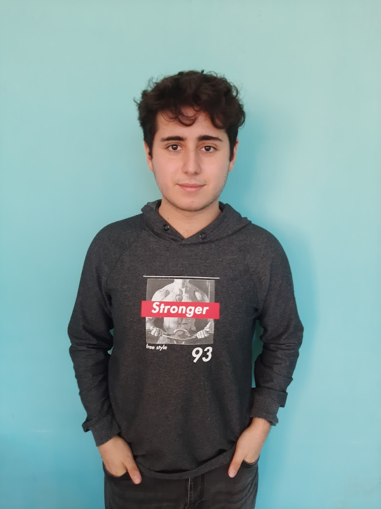
Paolo Battini - la Banalità del Male
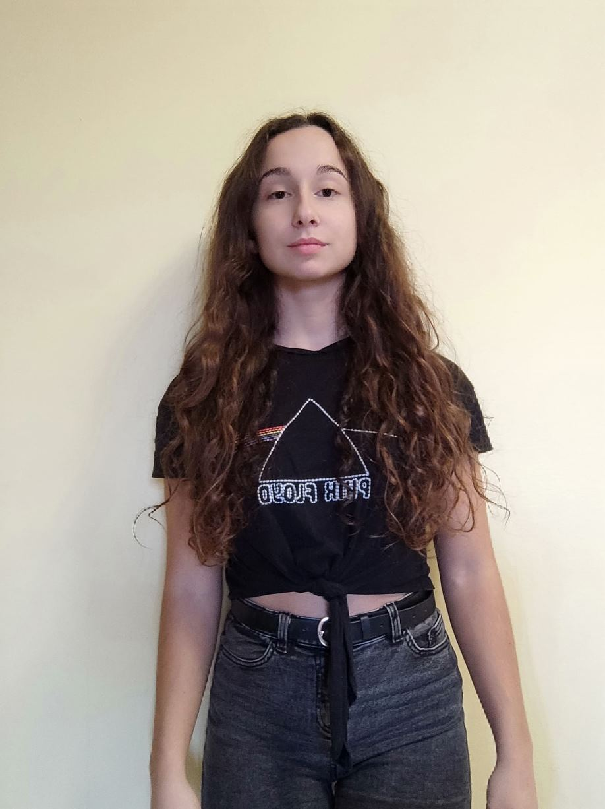
Noemi Sorrentino - la Banalità del Male
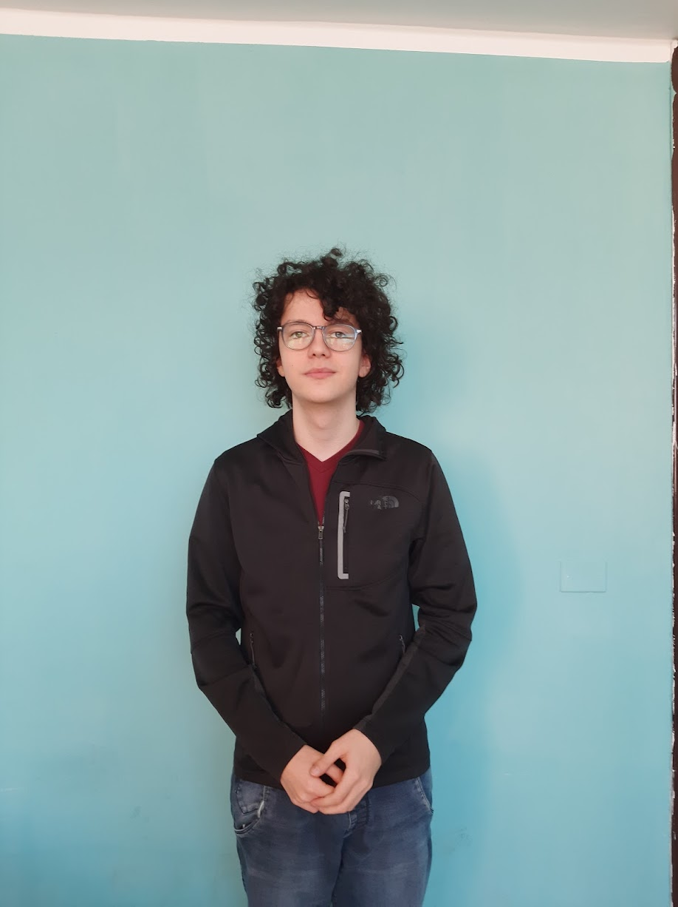
Giacomo Palombo - la Banalità del Male, Scrittura HTML e Foto